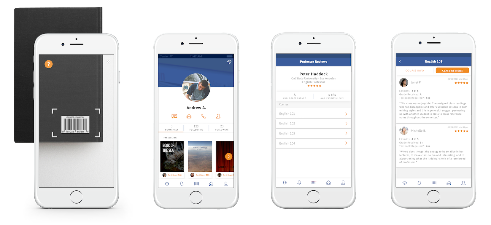

A mobile application that uses a chat, listing, and search feature to create a hyper-local textbook marketplace created for Students by Students.
Foodtruckie Nation is a beautiful integration of Rest APIs, mobile design, and realtime technology.
The application was built off a Model, View, Controller system. Each View had data stored in the model and the logic was controlled by the controller.
System of listeners on the model data to make live updates. Frameworks like Signals were used.
Persistant data was used to store information onto the iphone to save calls to the server. To keep data persistent and updated, the framework Realm was used.
Drewslist was the first time I familiarized myself with POST and GET calls to the server. I would use tools like Postman to help debug server calls.
I used this tool to test any POST or GET request to the server to make sure the APIs we were using were working.
The Swift programming language was used to build Drew's List.
I use Tower as an GUI interface for Github, making pushing and pulling so much more easier!
These frameworks are included on the podfile of the xcode projects. These pods make my code so much better and way cleaner!
Alamofire is an HTTP networking library written in Swift. Started playing with server POST and GET requests.
ObjectMapper is a framework written in Swift that makes it easy for you to convert your model objects (classes and structs) to and from JSON. This made it easier for me to covert the json retrieved from https requests and send json to the server.
Drewslist was the first time I dealt with chat systems. Sockets are essential to make connections between clients in order to pass chat messages quickly and efficiently.
When dealing with server requests, things could get out of line especially with time. The PromiseKit helped create threads that made the time it took to get or post a request irrelevant.
To keep data that didn't need constant updates, persistence was used. Realm made it easier to keep data persistent and in sync.
Signals was used to support the publisher + subscriber model. Live updates to the model data showed instantly with callbacks.